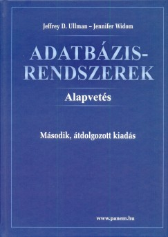

Adatbázisrendszerek I.
A HTML 5 nyelv alapjai
Prezentáció
Adatbázisrendszerek
Ez a kurzus a HTML5 nyelv alapjait tartalmazza.
Tartalom:
Adatkezelés, adatbáziskezelés fogalma
Adatmodellek
Relációs modell, ER modell
SQL nyelv
DML, DDL, DQL
